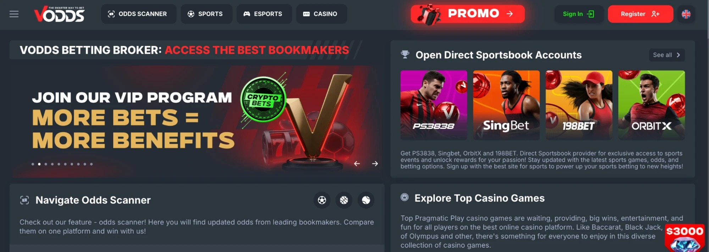
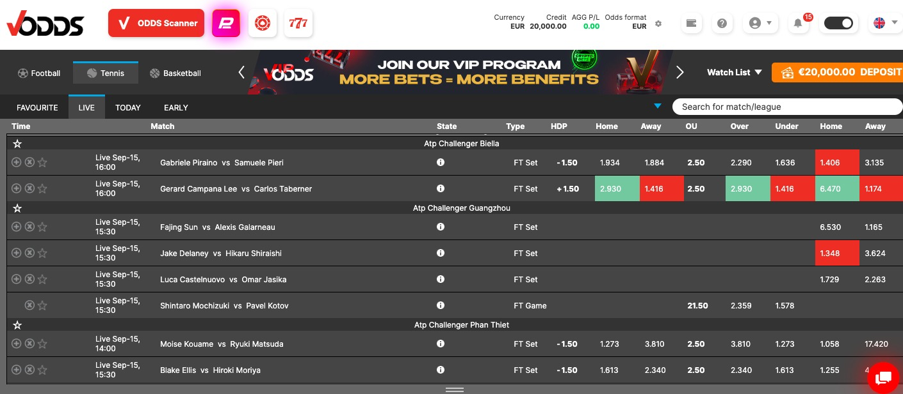
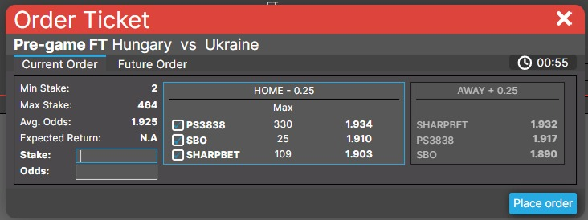
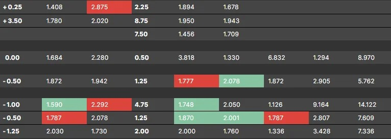
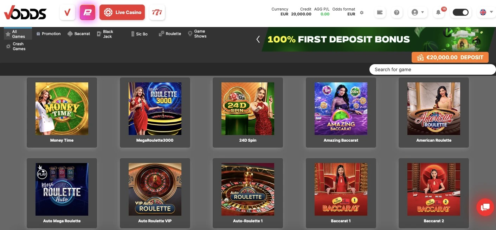

VOdds est un courtier en paris. Une seule inscription vous donne accès à plusieurs bookmakers, plateformes d'échange de paris et marchés de prédictions, depuis un solde unique, sans avoir à ouvrir un compte chez chacun d'eux.
VOdds n'est pas un bookmaker et ne fixe aucune cote. La plateforme agrège les cotes de ses partenaires connectés et redirige votre pari vers l'opérateur de votre choix.
Cette fonctionnalité de courtage au sein d'Odds Scanner est le cœur même de VOdds.
La plateforme comprend également:
Toutes ces rubriques sont accessibles depuis votre compte VOdds unique.
L'Odds Scanner constitue la fonction de courtage de la plateforme. Pour n'importe quel marché, il affiche en temps réel les offres de chaque fournisseur connecté et vous permet de placer votre pari directement depuis le même écran, sans jamais avoir à vous connecter vous-même chez un bookmaker.
Sports couverts: football, tennis et basket-ball, en pré-match comme en direct.
Depuis l'Odds Scanner, vous pouvez :

Fournisseurs de paris sportifs disponibles sur l'Odds Scanner:
Pour un même pari, chaque opérateur — qu'il s'agisse de bookmakers asiatiques, de betting exchanges ou de marchés de prédiction — applique ses propres cotes et limites. L'Odds Scanner rassemble l'ensemble de ces offres sur une seule interface, vous garantissant ainsi de toujours saisir la cote la plus élevée du marché.
Comment placer un pari

En résumé, le fonctionnement de VOdds est très simple:
Un événement → plusieurs opérateurs → plusieurs cotes disponibles → vous choisissez l'offre souhaitée → vous validez vos paris depuis votre compte VOdds unique.
L'Odds Scanner indique chaque changement de cote en temps réel:

Si la cote évolue après l'ajout d'une sélection, votre coupon de pari affiche automatiquement la nouvelle cote et vous demande de l'accepter ou de la refuser avant de valider votre pari.
L'Odds Scanner couvre le football, le tennis et le basket-ball. Si vous recherchez d'autres sports, marchés, types de paris ou des limites plus élevées, VOdds peut également vous ouvrir des comptes directs auprès d'opérateurs partenaires:
Ces comptes fonctionnent directement sur l'interface propre de l'opérateur, indépendamment d'Odds Scanner: vous accédez à l'ensemble de l'offre du bookmaker concerné, sans comparaison multi-fournisseurs. Étapes de configuration : Comment ouvrir un compte direct VOdds en ligne
PSPORTS est un bookmaker classique directement intégré à la plateforme. Il ne s'agit pas d'un outil de comparaison de cotes:
Utilisez PSPORTS si le sport, l'événement ou le marché que vous recherchez n'est pas disponible sur Odds Scanner. Guide complet : PSPORTS | Compte Bookmaker
En plus des paris sportifs, VOdds propose des jeux avec croupiers en direct, des machines à sous et des jeux de crash, tous accessibles depuis une même interface.

Parmi les éditeurs disponibles, vous trouverez notamment Pragmatic Play, PG Soft et POP Play.
L'ensemble de ces jeux utilise le même solde que celui de la section sport — aucun transfert de fonds n'est nécessaire.
Chaque méthode de paiement a son propre processus de dépôt.
Cartes bancaires
Les paiements par carte bancaire pour les paris en ligne ne sont pas disponibles dans certains pays et restent soumis à la politique de votre banque ainsi qu'à des vérifications complémentaires. Veuillez vérifier la réglementation en vigueur dans votre pays avant d'utiliser une carte Visa ou Mastercard.
Crypto
E-wallets et services bancaires
Délais de retrait: le temps de traitement dépend du mode de paiement choisi et de la validation préalable de votre compte (procédure KYC). Instructions pas à pas : Comment effectuer un retrait sur le site de paris VOdds ?
L'assistance est disponible 24 h/24 et 7 j/7 pour toute question relative à votre compte, à vos paris, à vos paiements ou à tout problème technique — y compris si un fournisseur ou une fonctionnalité n'apparaît pas à l'écran.